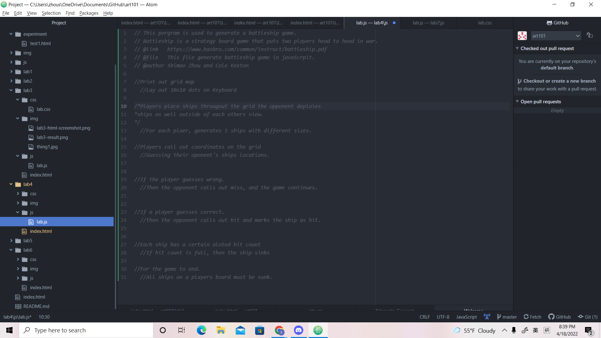
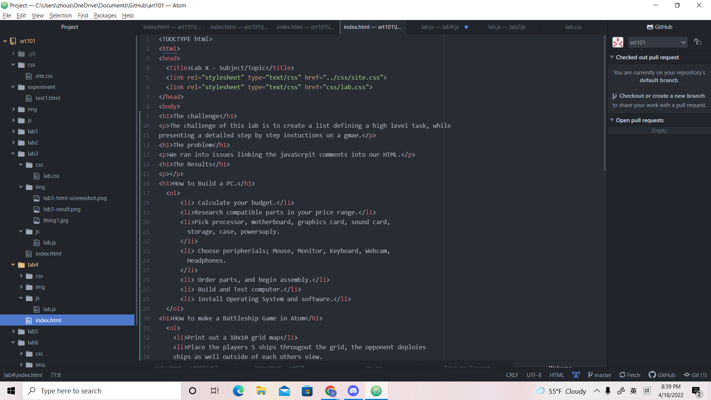
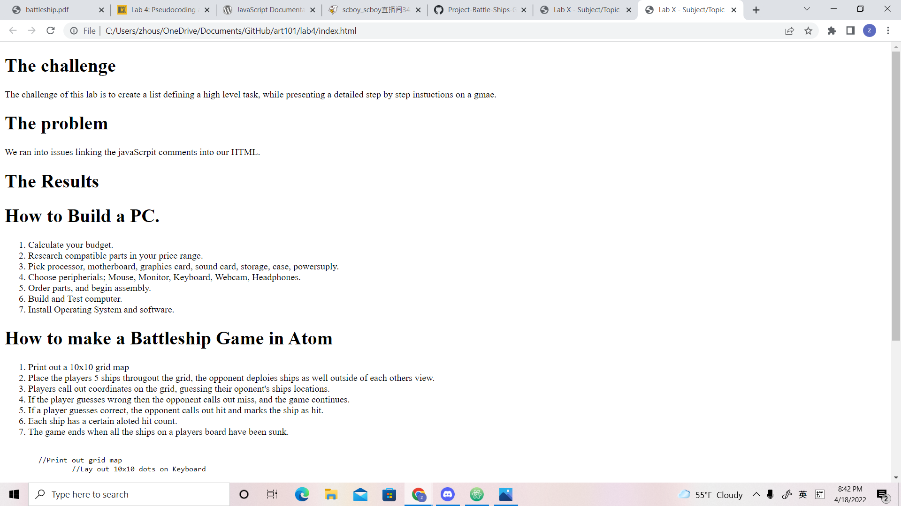

The challenge of this lab is to create a list defining a high level task, while presenting a detailed step by step instuctions on a gmae.
We ran into issues linking the javaScrpit comments into our HTML.
The final product came out detailing out listing all the steps you need to surrounding buying and building a PC, as well as detailing the game of Battleship as well.
  
//Print out grid map
//Lay out 10x10 dots on Keyboard
/*Players place ships througout the grid the opponent deploies
*ships as well outside of each others view.
*/
//For each plaer, generates 5 ships with different sizes.
//Players call out coordinates on the grid
//Guessing their oponent's ships locations.
//If the player guesses wrong.
//Then the opponent calls out miss, and the game continues.
//If a player guesses correct.
//then the opponent calls out hit and marks the ship as hit.
//Each ship has a certain aloted hit count
//If hit count is full, then the ship sinks
//For the game to end.
//All ships on a players board must be sunk.